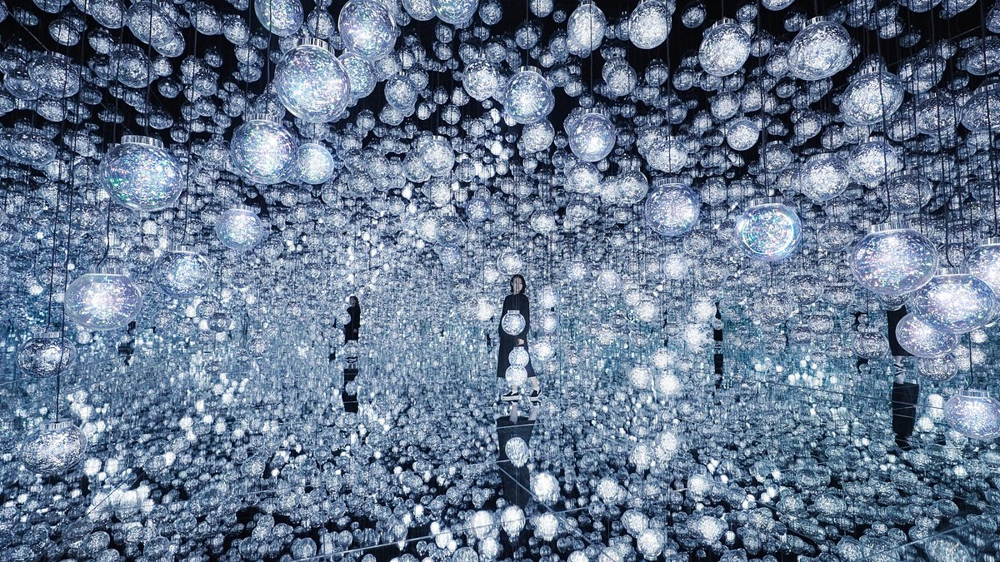
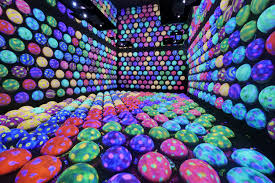
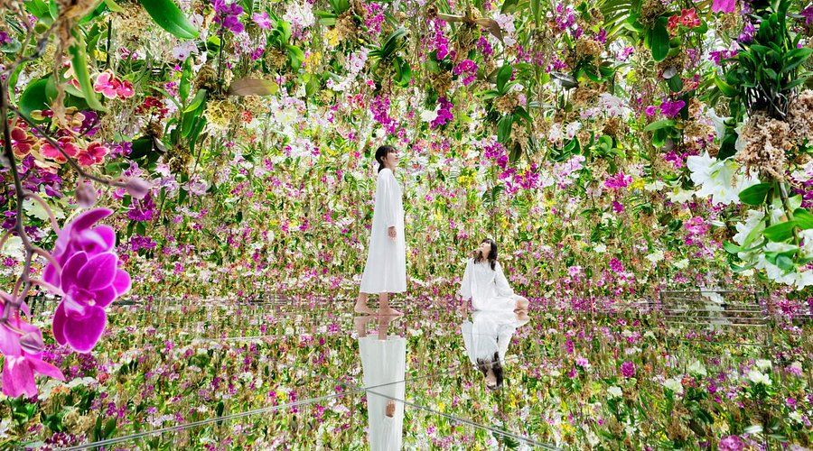
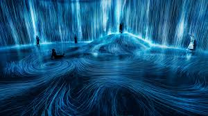
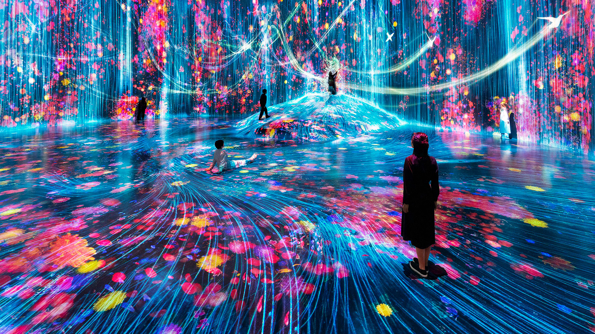
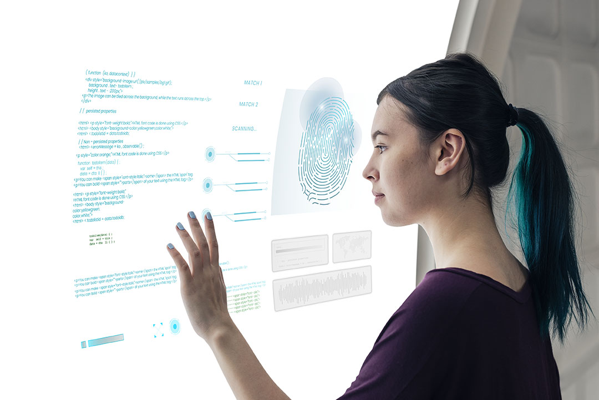

Obras y conceptos clave
-
Borderless

teamLab Borderless es un museo de arte inmersivo y digital que fue inaugurado el 2018, en Tokio.
Las obras trascienden las salas, se relacionan entre sí, se influyen mutuamente y, a veces, se entremezclan, sin límites. A través de este conjunto de obras, se crea un mundo continuo y sin fronteras.
Obras de teamLab Borderless
Sus instalaciones más famosas son:
-
Forest of Resonating Lamps
Significa "Bosque de lámparas resonantes".
Esta obra de arte, en la que las lámparas parecen estar dispersas al azar, se compone de luz resonante que cambia según la relación entre las personas en el espacio de la obra. Es una obra que expresa la belleza de la continuidad.
Para conocer más sobre la obra, hacer click en el siguiente enlace: Sitio oficial de Forest of Resonating Lamps

-
Moving Creates Vortices and Vortices Create Movement
Cuando una persona se mueve, nace un flujo, y ese flujo crea una influencia que se extiende a lo largo y ancho. El movimiento de otras personas también crea un flujo, convergiendo y formando un vórtice.
Para conocer más sobre la obra, hacer click en el siguiente enlace: Sitio oficial de Vortices

-
-
Planets

teamLab Planets es un museo inmersivo y digital que fue inaugurado el 2018, en Tokio.
Este popular museo en la región de Kanto surgió a partir de una exposición de arte digital del mismo nombre que tuvo un éxito abrumador en el verano de 2016. Luego, la idea y las instalaciones se ampliaron para dar forma a teamLab Planets, con 10 000 metros cuadrados de espacio.
Obras de teamLab Planets
Sus instalaciones más famosas son:
-
Sketch Ocean
Significa "Océano de bocetos".
La obra consiste en animar los dibujos de peces en un océano con otros peces dibujados por otras personas. A veces, los peces abandonan la sala, trascienden los límites entre las obras de arte y comienzan a nadar por todo el museo.
Para conocer más sobre la obra, hacer click en el siguiente enlace: Sitio oficial de Sketch Ocean

-
The Crystal World o Infinite Crystal Universe
La obra puede llamarse de dos formas: "El mundo de cristal" o "Universo de cristal infinito"
Esta instalación artística interactiva utiliza la acumulación de puntos de luz para crear una estructura escultórica, de forma similar a como los distintos puntos de color forman una imagen en la pintura puntillista. Aquí, la acumulación de luces en el espacio tridimensional expresa elementos del mundo natural.
Para conocer más sobre la obra, hacer click en el siguiente enlace: Sitio oficial de Crystal World

-
-
Flowers and People

Las flores nacen, florecen y, con el tiempo, se marchitan y mueren. Repiten eternamente el ciclo de la vida y la muerte. Cuando las personas se mueven frente a la obra, las flores se dispersan de repente. Pero cuando se quedan quietas, florecen y crecen con mayor abundancia
La obra no es una imagen pregrabada que se reproduce: es creada por un programa informático que la renderiza continuamente en tiempo real. La interacción entre las personas y la instalación provoca un cambio constante en la obra: los estados visuales anteriores nunca se pueden replicar ni repetir. La imagen en este momento jamás se podrá volver a ver.
Para conocer más sobre la obra, hacer click en el siguiente enlace: Sitio oficial de Flowers and People
-
Universe of Water Particles

Cuando las personas se paran sobre la cascada o la tocan, obstruyen el flujo del agua como si fueran rocas, y este se altera. El flujo del agua continúa transformándose debido a la interacción de las personas. Los estados visuales anteriores son irrepetibles y jamás volverán a repetirse.
El agua se representa mediante un continuo de numerosas partículas. Se calcula la interacción entre las partículas y, a continuación, se trazan líneas que reflejan su comportamiento. Estas líneas se «aplanan» utilizando lo que teamLab denomina espacio ultrasubjetivo.
Para conocer más sobre la obra, hacer click en el siguiente enlace: Sitio oficial de Universe of Water Particles
-
Arte inmersivo

El arte inmersivo, tal y cómo indica su nombre, permite la sumersión del espectador en la obra de arte. De este modo, el espectador no solo mira la obra, sino que pasa a formar parte de esta y a usar otros sentidos que no solo sea la vista.
Las obras son a menudo proyectadas en instalaciones que incorporan grandes pantallas y suelos reflectantes donde el artista trabaja con la simulación del espacio creado digitalmente y el espacio físico. La característica principal de las instalaciones de arte inmersivo reside en su capacidad para ofrecer a los visitantes un entorno multisensorial meticulosamente diseñado.
El arte inmersivo ofrece un mayor nivel de interactividad y participación experiencial, brindando a los espectadores una experiencia más inmersiva.
-
Interactividad digital

Es importante no confundir el arte inmersivo con el interactivo. El arte interactivo está pensado para que sea el espectador quién, al moverse ante la pantalla, esta detecte el movimiento y se creen los colores y las luces. El arte inmersivo no necesariamente tiene que ser interactivo. Puede ser que el espectador se pasee por la inmensidad de la obra proyectada en las paredes del espacio pero sin modificar su estado. Por lo tanto, el arte inmersivo puede ser o no interactivo y a la inversa.
El arte interactivo surgió a finales de la década de 1950, en paralelo con el deseo de los artistas de encontrar entornos menos alienantes y exclusivos para exhibir su arte. A medida que la calle, el almacén o el escaparate se convirtieron en su opción preferida, el arte también se volvió más participativo e inclusivo
El arte interactivo también se basa en la informática, donde el participante responde a la tecnología establecida por el artista, como en las obras públicas de Rafael Lozano-Hemmer . El arte interactivo también se asocia con la estética relacional .